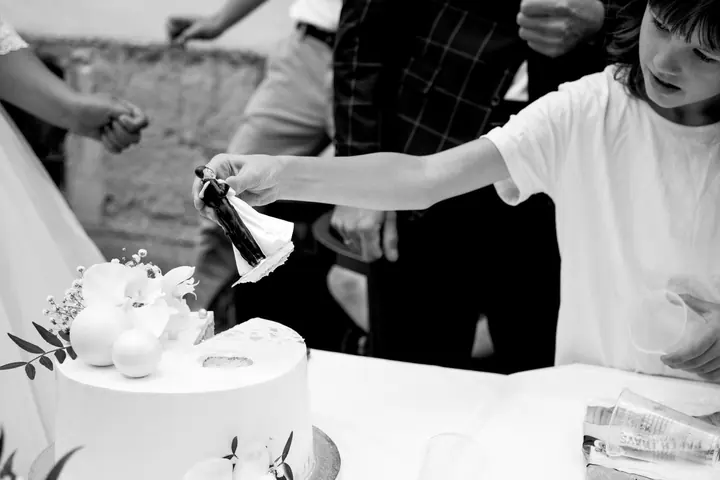
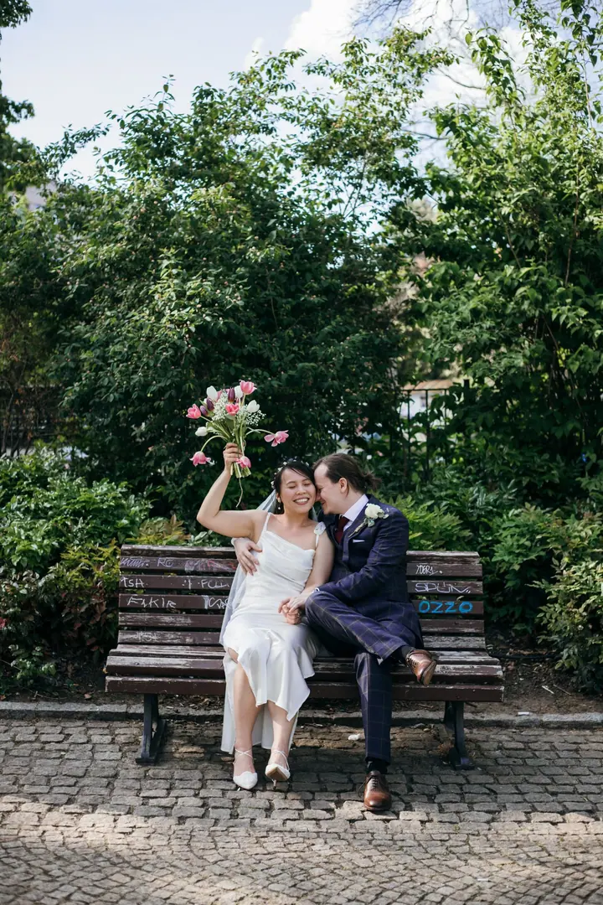
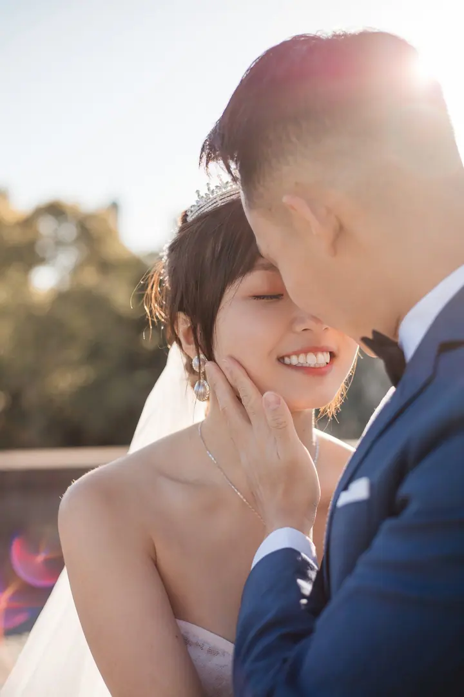

jedna
Svatby
Fotím celý svatební den, od příprav přes obřad až po hostinu. Každý je krásný a já tu krásu ráda najdu a uložím.

Svatební fotografka a fotografka párů · Praha

Jmenuji se Olha Peretiatkevych a fotím svatby, romantické příběhy párů i portréty v Praze. Věřím, že každý je krásný, a mou prací je tu krásu najít a uložit.
Více o mně
Co fotím
jedna
Fotím celý svatební den, od příprav přes obřad až po hostinu. Každý je krásný a já tu krásu ráda najdu a uložím.
dvě
Focení pro dva, ať už před svatbou, nebo jen tak. Procházka, společný čas a fotky, na kterých jste to opravdu vy.
tři
Klidné portrétní focení, při kterém hledám to, co je krásné právě na vás.
Fotím rodiny i křtiny, tedy chvíle, ke kterým se budete rádi vracet. Domluvíme se, kde a jak.

Každý je krásný. I vy.


Za objektivem
Fotím pod značkou Photon. Nejčastěji mě najdete na svatbách, ale stejně ráda fotím páry, portréty, rodiny a křtiny. Vždycky mě zajímají lidé a to, jak spolu jsou.
Mám jedno jednoduché přesvědčení: každý je krásný. Nemusíte umět pózovat ani se před foťákem cítit jistě. Já se dívám, čekám a hledám chvíle, kdy jste sami sebou.
Kromě fotografií natáčím i video a nabízím střih, retuš fotografií a dárkové poukazy. Když chcete svůj den mít i v pohybu nebo někomu darovat focení, ráda vám s tím pomůžu.
Olha
Pošlete mi datum, místo a pár slov o tom, co plánujete. Ozvu se vám a ověřím, jestli mám volno.
Probereme, jak má den vypadat, co je pro vás důležité a jestli chcete i video.
Na místě jsem nenápadně s vámi. Nechám vás prožívat den a sama hledám chvíle, které stojí za to uložit.
Snímky pečlivě vyberu a upravím a pošlu vám je v online galerii.
Portfolio
Fotografie jsou ilustrační
Otázky
Fotím v Praze a okolí. Pokud plánujete svatbu nebo focení jinde, napište mi a domluvíme se.
Ano, kromě fotek nabízím i video a jeho střih. Můžete tak mít svůj den i v pohybu.
Vůbec ne. Nečekám, že budete umět pózovat. Ráda vás navedu, ale hlavně hledám přirozené chvíle, kdy jste sami sebou.
Ano, nabízím dárkové poukazy. Hodí se třeba pro pár, který se chystá na svatbu, nebo pro rodinu.
Napište pár vět o tom, co si představujete. · +420 608 398 737